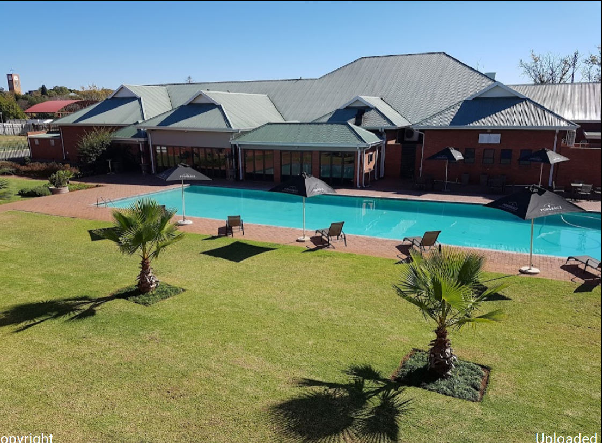
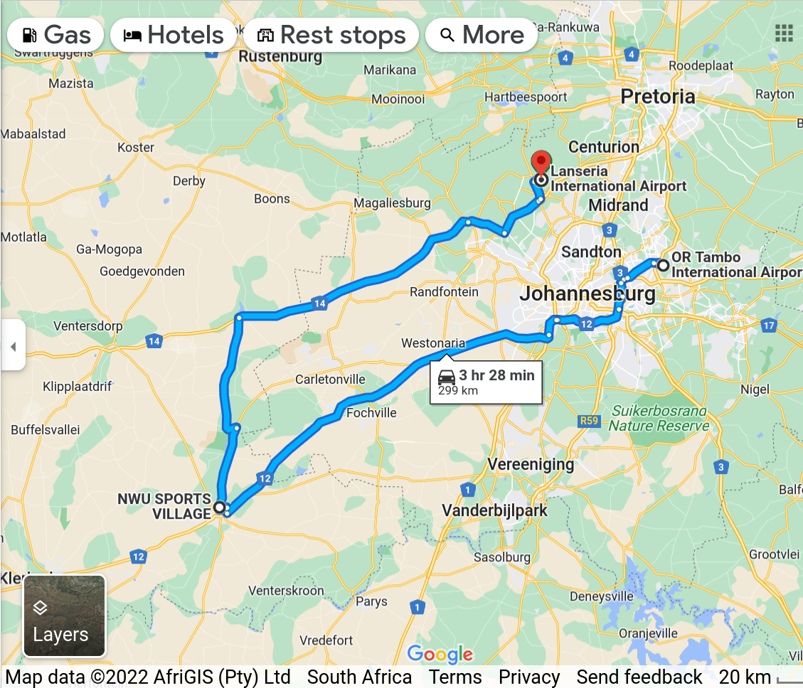

<!--<div class="alert alert-warning text-center">TBA</div>-->


<div class="container">
    <div class="row mt-xs-0 mt-sm-0 mt-md-1 mt-lg-2 mt-xl-3 mb-xs-2 mb-sm-2">
        <div class="col text-muted">


            <p>This Capacity Building Workshop shall be held at Potchefstroom, South Africa</p>

            <div class="text-info">Event Location:</div>

            <p> Center for Space Research, C-315, North-West University, 6520, Private Bag X6001
                Potchefstroom South Africa <br>
            </p>

            <div class="text-info">Accomodations:</div>

            <p> The experts and partcipants shall be accomodated at the Sports Village, 
                an associated facility of the North West University<br>
                
            </p>
            
            <div class="text-info">Directions:</div>

            <p>The Auditorium Hall C-315 is in the walking distance from the 
                <a href="http://services.nwu.ac.za/sports-village">Sports Village</a> 
                and other nearby guest houses such as 
                <a href="https://ongoldenpondguesthouse.co.za"> 
                The Golden Pond</a>, <a href="https://www.macachette.co.za/"> Ma Cachette B & B</a>
                etc. 

            

            <div class="text-info">How To Reach:</div>

            <p> Nearest airports are 1) OR Tambo International airport (ORT), and 
                2) Lanseria international airport (HLA) </p> 
            

        </div>
    </div>
</div>
